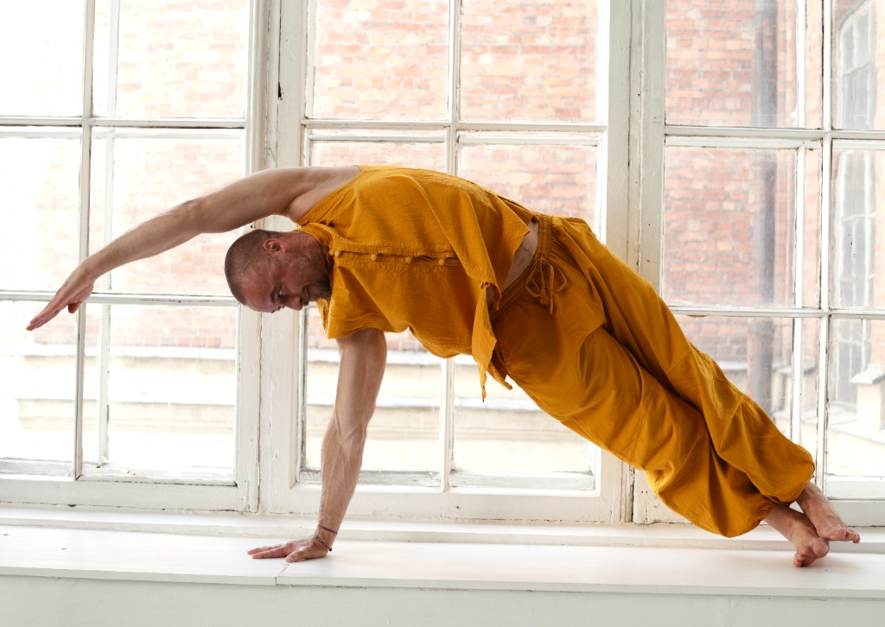

Занятия в зале — дорого, расписание, чужой темп
Групповой формат редко даёт время разобрать именно вашу механику: вы повторяете форму, но не всегда понимаете, зачем она устроена так и как её адаптировать.
Йога как метод
Восемь недель последовательной практики: движение, дыхание и внимание — в одной системе, которую можно продолжать самостоятельно.
Узнать подробности ↓Групповой формат редко даёт время разобрать именно вашу механику: вы повторяете форму, но не всегда понимаете, зачем она устроена так и как её адаптировать.
Разные стили, разный темп, нет логики прогрессии. Сложно удержать регулярность, когда каждый урок — отдельная вселенная.
Месяц занятий — а ясности в теле, дыхании и опоре не прибавилось. Без системы практика легко превращается в ритуал «для галочки».
Я веду йогу как последовательную работу с опорой, дыханием и вниманием — не как набор красивых форм. На курсе мы собираем практику по неделям: от базовых асан и дыхательного ритма к более сложным связкам и индивидуальной последовательности, которую вы сможете повторять без «внешнего тренера в голове».
Если вы знакомы с курсом «Точка опоры» по цигун — это следующий слой той же логики: та же внимательность к телу, но язык йоги — асаны, виньясы, работа с балансом и восстановлением. Студийный формат «повтори за наставником» здесь сознательно заменён объяснением: что вы делаете, зачем и как почувствовать результат в обычном дне.
«Практика работает, когда вы понимаете опору — в стопе, в тазе, в дыхании. Тогда поза перестаёт быть картинкой и становится опытом.»

Курс записан для домашнего формата: вам нужен коврик, немного пространства и готовность заниматься 3–4 раза в неделю по 40–50 минут.
Регулярная практика йоги ассоциируется со снижением маркеров стресса в исследованиях с контролируемым режимом занятий.1
PubMed — обзор по йоге и стрессуДыхательные и мягкие телесные практики могут влиять на ВСР как показатель баланса нервной системы.2
PMC — йога и ВСРТренировки внимания и координации связаны с изменениями в сетях, отвечающих за телесную схему и саморегуляцию.3
Frontiers — mindful movementМедленное ритмичное дыхание поддерживает восстановление и снижение возбуждения.4
WHO — physical activity guidelinesДанные приведены в ознакомительных целях — это не медицинская рекомендация и не замена консультации специалиста.
Восемь недель — от базы к самостоятельной последовательности. Каждый модуль раскрывается по клику.
Практика перестала быть «набором упражнений» — появилось понимание, зачем я делаю каждое движение и как дышать в асане.
После нескольких недель стало проще держать регулярность: короткие уроки, понятная логика и живой чат вместо формальной поддержки.
Наконец разобралась с балансом и опорой в стопе — раньше в студии просто повторяла за группой.
Выберите формат участия. Цены уточняются при записи.
по запросу
Написать в TelegramОтветим в течение нескольких часов
Популярный выбор
по запросу
Написать в TelegramОтветим в течение нескольких часов